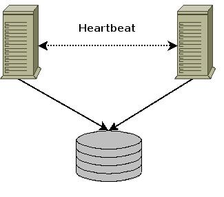

| GNU/Linux, software libre para la comunidad universitaria: Clustering y alta disponibilidad en GNU/Linux | ||
|---|---|---|
| Anterior | Capítulo 2. Arquitectura de Clustering | Siguiente |
Un servicio de cluster consta de:
Balanceador de carga.
Sistema para la detección de fallos en los nodos del cluster.
Servicio a clusterizar.
Recursos del cluster.
Fencing.

Arquitectura básica de un cluster.
Sólo son necesarios en aquellas configuraciones que sean Activo / Activo y/o balanceo de carga.
La función de los balanceadores, también conocidos como network dispatcher es redireccionar las peticiones a los servidores que las están atendiendo.
Es necesario un sistema que detecte cuando existen nodos en el cluster que no están disponibles para ofrecer el servicio. En este caso no se enviarán peticiones para ser atendidas si el cluster es Activo / Activo o no se balanceará el servicio sobre ellos si es Activo / Pasivo.
Para detectar esta situación se utilizan dos técnicas:
Heartbeat.
Disco de quorum.
Es el servicio que se quiere clusterizar.
Son todos aquellos recursos necesarios para el servicio:
IP de servicio.
Filesystems.
Scripts para arrancar el servicio, ...
Cuando un nodo falla y no es capaz de ofrecer el servicio es necesario disponer un medio para reiniciarlo y que libere los recursos que pudiera tener ocupados.